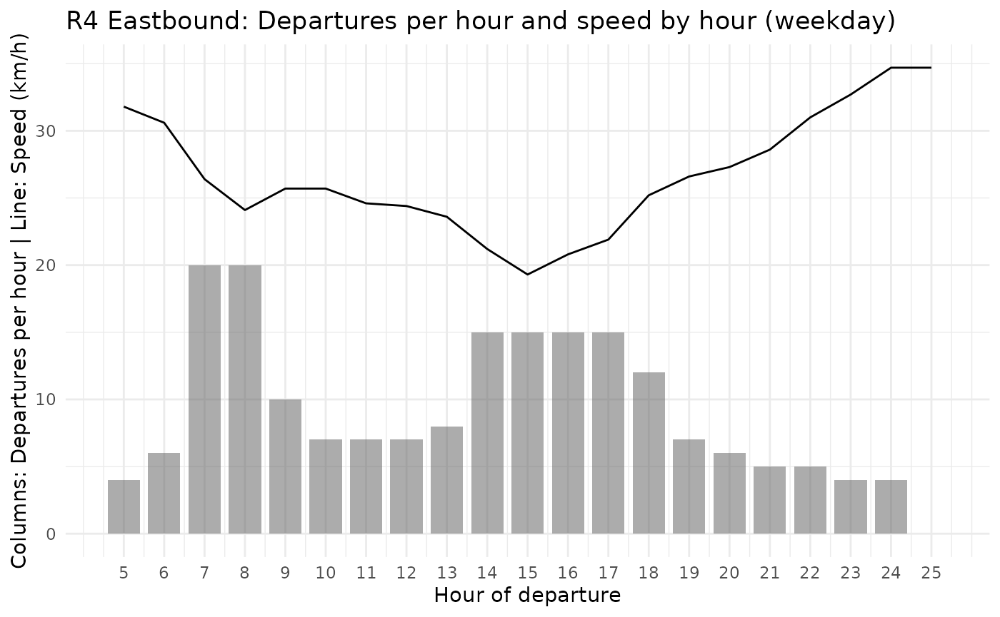
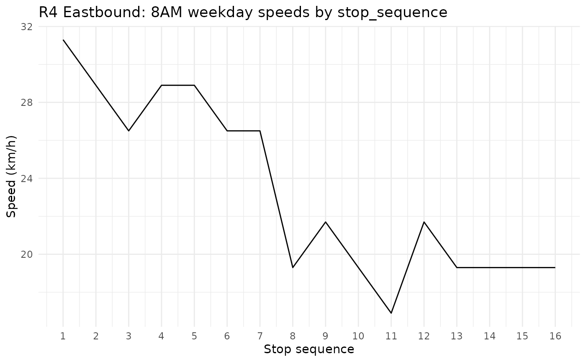

library(dplyr)
#>
#> Attaching package: 'dplyr'
#> The following objects are masked from 'package:stats':
#>
#> filter, lag
#> The following objects are masked from 'package:base':
#>
#> intersect, setdiff, setequal, union
library(ggplot2)
library(croquis)The Simplified Speed and Frequency Specification (SSFS) is the
foundational data structure of Croquis. It consists of a simplified
representation of a GTFS (General Transit Feed Specification) and
contains the instructions for how to build one, which are read by
ssfs_to_gtfs().
Like the GTFS, it contains a list of tables pertaining to a transit network and schedule. In fact, three of the tables are shared (agency, routes, and calendar) and are simply passed on from one data structure to the other. The stops table is also carried over with a geometry transformation. Unlike GTFS, SSFS does not contain stop_times or trips. Instead, it contains:
- A simple features (geospatial) table called itin which contains the geometry of the distinct itineraries (or variants) of the routes.
- A data.frame table called span which contains the first and last departure time for each service window, for each service, and for each route itinerary.
- A data.frame called hsh which details the headway (interval between trips) and speed (in km/h) by hour of operation for each route itinerary and service.
- A data.frame called stop_seq which details the stop order for each route itinerary as well as the speed factor to apply to adjust speeds by route segment relative to the speed provided by hour in hsh. This is used to produce stop_times in conjunction with the distance between stops based on the geometry in itin.
SSFS was designed to facilitate production, editing and calibration of transit networks and schedules in a GTFS-compatible format.
When you load a GTFS network into the Croquis Shiny app, it converts the GTFS to an SSFS. Note that many details of the GTFS are dropped in this conversion, in favour of a simpler data structure that facilitates rapid modification while retaining key details including how service levels and speeds vary throughout the day, and how speed varies across route segments.
To convert a GTFS to an SSFS in the console, use
gtfs_to_ssfs(). To produce an empty SSFS in the console,
use ssfs().
The rest of this vignette covers each table of the SSFS, including
the fields of each and data types. We will use translink
data from Vancouver that is included in the croquis package.
SSFS tables
agency
The agency table consists of the required and
conditionally required fields of the GTFS agency table. These are all
<chr> fields. This table is passed on between GTFS
and SSFS formats.
The agency_id field links this table to the
routes table.
head(translink$agency)
#> agency_id agency_name agency_url agency_timezone
#> 1 TL TransLink https://www.translink.ca America/Vancouverroutes
The routes table consists of the required and
conditionally required fields of the GTFS routes table, plus
route_color and route_text_color. This table
is passed on between GTFS and SSFS formats. If an imported GTFS is
missing the colour-related fields or either of the conditionally
required fields, gtfs_to_ssfs() will produce them.
Field connections:
- The
agency_idfield connects this table to the agency table. - The
route_idfield connects this table to the itin table.
glimpse(translink$routes)
#> Rows: 241
#> Columns: 7
#> $ route_id <chr> "10232", "11201", "11202", "11692", "11693", "11696",…
#> $ agency_id <chr> "TL", "TL", "TL", "TL", "TL", "TL", "TL", "TL", "TL",…
#> $ route_short_name <chr> "256", "033", "042", "364", "388", "609", "595", "414…
#> $ route_long_name <chr> "Whitby Estate/Park Royal/Spuraway", "16 & 33rd Avenu…
#> $ route_type <int> 3, 3, 3, 3, 3, 3, 3, 3, 1, 3, 3, 3, 3, 3, 3, 3, 3, 3,…
#> $ route_color <chr> "92C5DE", "92C5DE", "92C5DE", "92C5DE", "92C5DE", "92…
#> $ route_text_color <chr> "000000", "000000", "000000", "000000", "000000", "00…stops
stops in the SSFS is a simple features table that
consists of the stop_id and stop_name fields that are passed on between
the SSFS and GTFS, plus a POINT geometry field based on the
stop_lat and stop_lon of the GTFS.
The stop_id field connects this table to the
stop_seq table.
glimpse(translink$stops)
#> Rows: 8,669
#> Columns: 3
#> $ stop_id <chr> "1", "10000", "10001", "10002", "10003", "10004", "10005", "…
#> $ stop_name <chr> "Westbound Davie St @ Bidwell St", "Northbound No. 5 Rd @ Mc…
#> $ geometry <POINT [°]> POINT (-123.1407 49.28659), POINT (-123.0915 49.17996)…itin
itin is a simple features table that identifies each
unique route itinerary in the network and provides a
LINESTRING geometry for each. Each itinerary corresponds to
a unique trip pattern (combination of stop_id and stop_sequence) of a
route. The geometry is based on data from shapes table of
the GTFS. In the case of GTFS that does not include a
shapes table, gtfs_to_ssfs() will create one
by either connecting the stops directly or by connecting the stops along
the road network using the osrm or valh
packages, depending on associated route_type and the availability of
OSRM or Valhalla routing servers.
itin also includes the direction_id and
trip_headsign fields which are carried over from the GTFS
trips table and are used to create trips data when producing a GTFS from
the SSFS with ssfs_to_gtfs().
Field connections:
- The
itin_idfield connects this table to the stop_seq, span, and hsh tables. - The
route_idfield connects this table to the routes table.
glimpse(translink$itin)
#> Rows: 904
#> Columns: 5
#> Groups: itin_id [904]
#> $ itin_id <chr> "10232_0_1", "10232_1_1", "11201_0_1", "11201_1_1", "116…
#> $ route_id <chr> "10232", "10232", "11201", "11201", "11692", "11692", "1…
#> $ direction_id <int> 0, 1, 0, 1, 0, 1, 0, 1, 0, 1, 0, 0, 1, 1, 0, 1, 1, 0, 0,…
#> $ trip_headsign <chr> "256 21st To Whitby Estates", "256 Park Royal", "33 16th…
#> $ geometry <LINESTRING [°]> LINESTRING (-123.1393 49.32..., LINESTRING (-…calendar
The calendar table is carried over directly from the GTFS calendar table and consists of all of its required fields. It defines the operating dates of each service.
The service_id field connects to the span and
hsh tables.
head(translink$calendar)
#> service_id monday tuesday wednesday thursday friday saturday sunday
#> 1 mon-fri 1 1 1 1 1 0 0
#> 2 sat 0 0 0 0 0 1 0
#> 3 sun 0 0 0 0 0 0 1
#> start_date end_date
#> 1 2026-04-20 2026-06-07
#> 2 2026-04-20 2026-06-07
#> 3 2026-04-20 2026-06-07span
The span table contains data on the first and last departure time for each service window, for each service, and for each route itinerary. A service window is a period during which continuous service is offered based on headways defined in the hsh table.
Field connections:
- The
itin_idfield connects to the itin, hsh, and stop_seq tables. - The
service_idfield connects to calendar and hsh.
glimpse(translink$span)
#> Rows: 2,410
#> Columns: 5
#> $ itin_id <chr> "10232_0_1", "10232_0_1", "10232_0_1", "10232_1_1", "10…
#> $ service_id <chr> "mon-fri", "sat", "sun", "mon-fri", "sat", "sun", "mon-…
#> $ service_window <int> 1, 1, 1, 1, 1, 1, 1, 1, 1, 1, 1, 1, 1, 1, 1, 1, 1, 1, 1…
#> $ first_dep <chr> "06:05:00", "07:05:00", "09:05:00", "06:40:00", "07:40:…
#> $ last_dep <chr> "19:05:00", "21:05:00", "20:05:00", "19:40:00", "21:40:…hsh
The hsh table details the headway (interval between trips) and speed (in km/h) by hour of operation for each route itinerary and service.
When importing a GTFS into Croquis or converting a GTFS to SSFS,
gtfs_to_ssfs() calculates the average commercial speed of
trips by route itinerary, service, and hour. This data is stored in the
hsh table, to be viewed and edited while in SSFS format, then converted
into stop_times based on the hour-by-hour data.
glimpse(translink$hsh)
#> Rows: 23,529
#> Columns: 5
#> $ itin_id <chr> "10232_0_1", "10232_0_1", "10232_0_1", "10232_0_1", "10232_…
#> $ service_id <chr> "mon-fri", "mon-fri", "mon-fri", "mon-fri", "mon-fri", "mon…
#> $ hour_dep <chr> "06:00:00", "07:00:00", "08:00:00", "09:00:00", "10:00:00",…
#> $ headway <int> 60, 60, 60, 60, 60, 60, 60, 60, 60, 60, 60, 60, 60, NA, 60,…
#> $ speed <dbl> 20, 20, 20, 20, 20, 20, 20, 20, 20, 20, 20, 20, 20, 20, 20,…As mentioned, the SSFS allows us to view and modify how speeds and service levels vary throughout the day. Converting a GTFS to SSFS can be useful for gathering summary information about service levels and speeds. Below is an example for generating a visual for daily service level and speed variation for weekday service on the R4 eastbound in Vancouver.
# Fetch route ID for R4
r4_route_id <-
translink$routes |>
filter(route_short_name == "R4") |>
pull(route_id)
# Fetch itin ID for R4 bound for Joyce-Collingwood Station
r4_e_itin_id <-
translink$itin |>
filter(route_id == r4_route_id, stringr::str_detect(trip_headsign,"Joyce")) |>
pull(itin_id)
# Fetch headway and speeds by hour table for weekday service and R4 bound for Joyce-Collingwood
r4_trips_ph_speed <-
translink$hsh |>
filter(itin_id == r4_e_itin_id, service_id == "mon-fri") |>
mutate(
trips_per_hour=floor(60/headway),
hour_dep = as.numeric(stringr::str_sub(hour_dep,1,2))) |>
select(hour_dep,trips_per_hour,speed)
# Visualise trips per hour and speeds in a ggplot
ggplot(r4_trips_ph_speed,aes(x = hour_dep))+
geom_col(aes(y = trips_per_hour), width = 0.8, alpha = 0.5)+
geom_line(aes(y = speed)) +
scale_y_continuous(
name = "Columns: Departures per hour | Line: Speed (km/h)")+
scale_x_continuous(breaks = r4_trips_ph_speed$hour_dep)+
labs(
title = "R4 Eastbound: Departures per hour and speed by hour (weekday)",
x = "Hour of departure") +
theme_minimal()
#> Warning: Removed 1 row containing missing values or values outside the scale range
#> (`geom_col()`).
stop_seq
The stop_seq table details the stop order for each route itinerary as well as the speed factor to apply to adjust speeds by route segment. When converting a GTFS to SSFS, speed_factors are calculated once per itinerary and per stop based on how the average interstop speed between that stop and the next one compares to the average speed of all trips of that itinerary. Speed factors are therefore not provided for the last stop in any stop sequence.
glimpse(translink$stop_seq)
#> Rows: 27,309
#> Columns: 4
#> $ itin_id <chr> "10232_0_1", "10232_0_1", "10232_0_1", "10232_0_1", "102…
#> $ stop_id <chr> "10947", "4782", "12883", "11118", "4491", "4661", "4662…
#> $ stop_sequence <int> 1, 2, 3, 4, 5, 6, 7, 8, 9, 10, 11, 12, 13, 14, 15, 16, 1…
#> $ speed_factor <dbl> 0.9, 1.2, 1.0, 0.7, 1.2, 0.4, 0.9, 1.0, 1.0, 1.1, 0.9, 1…The singular speed factor per stop is a heuristic approach that does not take into account how the relative speed of segments could vary throughout the day or depending on the service (weekday vs. weekend).
To demonstrate how the speed_factor field adjusts the speeds of a model to better represent the behaviour of a transit vehicle on a given route, below is a graph of the modelled speeds on the R4 route eastbound from UBC to Joyce-Collingwood for departures between 8:00AM and 8:59AM. Reflecting the data in the GTFS, speeds at the beginning of the route (on W 41st Avenue west of Granville Street and through the UBC Endowment Lands) are higher than further east along the route, where the route passes through denser and more congested segments of W 41st Avenue.
# Avg speed R4 EB 8AM
avg_speed_8am <-
r4_trips_ph_speed |> filter(hour_dep == 8) |> pull(speed)
stop_seq_speeds_8am <-
translink$stop_seq |>
filter(itin_id == r4_e_itin_id) |>
left_join(translink$stops |> as.data.frame() |> select(stop_id,stop_name),
by= "stop_id") |>
mutate(speed = round(avg_speed_8am*speed_factor,1)) |>
select(stop_sequence,stop_name,speed)
print(stop_seq_speeds_8am)
#> stop_sequence stop_name speed
#> 1 1 UBC Exchange @ Bay 4 31.3
#> 2 2 Southbound Wesbrook Mall @ Agronomy Rd 28.9
#> 3 3 Westbound W 16 Ave @ Wesbrook Mall 26.5
#> 4 4 Dunbar Loop @ Bay 7 28.9
#> 5 5 Eastbound W 41 Ave @ Carnarvon St 28.9
#> 6 6 Eastbound W 41 Ave @ Maple St 26.5
#> 7 7 Eastbound W 41 Ave @ Granville St 26.5
#> 8 8 Eastbound W 41 Ave @ Oak St 19.3
#> 9 9 Oakridge-41st Ave Station @ Bay 3 21.7
#> 10 10 Eastbound E 41 Ave @ Main St 19.3
#> 11 11 Eastbound E 41 Ave @ Fraser St 16.9
#> 12 12 Eastbound E 41 Ave @ Knight St 21.7
#> 13 13 Eastbound E 41 Ave @ Victoria Dr 19.3
#> 14 14 Eastbound E 41 Ave @ Clarendon St 19.3
#> 15 15 Eastbound E 41 Ave @ Rupert St 19.3
#> 16 16 Northbound Joyce St @ Kingsway 19.3
#> 17 17 Joyce Station @ Bay 1 Unload Only NA
# Visualise trips per hour and speeds in a ggplot
ggplot(stop_seq_speeds_8am[1:(nrow(stop_seq_speeds_8am)-1),],aes(x = stop_sequence))+
geom_line(aes(y = speed)) +
scale_y_continuous(
name = "Speed (km/h)")+
scale_x_continuous(breaks = stop_seq_speeds_8am$stop_sequence)+
labs(
title = "R4 Eastbound: 8AM weekday speeds by stop_sequence",
x = "Stop sequence") +
theme_minimal()
Together, these 8 tables provide a compact and easily-editable
representation of a transit network that readily converts to a GTFS.
SSFS objects in croquis have a formal class “ssfs” which is assigned
when creating a new SSFS using the ssfs() construtor
function. The validate_ssfs() function is a useful
companion when building SSFS data in programmed workflows and in the
console.